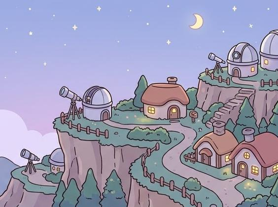

4학년 별숲 마을
그래프를 읽고 이름을 붙이는 전망대 마을
시장 그래프를 읽고 도형 이름표가 맞는지 가려봅니다. 분수 빵나눔터, 세모 지붕소, 리본 문구점, 네모 설계실, 꺾은길 전망대, 모자이크 공방 6곳을 돕니다. 아바타·별·씨앗·텃밭은 전 학년과 함께 씁니다.
나만의 주민 만들기
황금 세트 뽑기
별을 모아 한정 세트 조각을 뽑아 보세요. 뽑은 조각은 아바타 옷장에서 입을 수 있습니다.
마을 산책
WASD 키나 방향키, 아래 단추로 걷습니다. 집 앞에 서면 입장 단추가 뜹니다.

주민에게 다가가면 말이 뜹니다
씨앗 텃밭
차시를 끝내면 씨앗을 받습니다. 심고 물을 주면 별로 자랍니다.
마을 부엌 · 장터 · 강가 · 화단 · 감별실 놀이
거둔 작물의 무게를 재어 장터에 팔거나 요리해 선물하고, 강가 채집과 꽃 배합·모눈 그림 감별 놀이를 즐겨 보세요.
우리 집 꾸미기
주민 부탁
부탁을 해결하면 카드와 씨앗, 별을 받습니다.
수집 도감
모은 카드 0/10